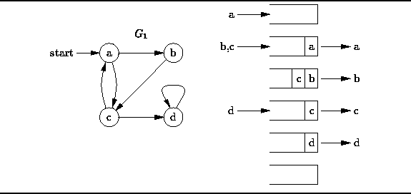

Data Structures and Algorithms
with Object-Oriented Design Patterns in Java
Data Structures and Algorithms
with Object-Oriented Design Patterns in Java
The breadth-first traversal
of a graph is like
the breadth-first traversal of a tree discussed in Section  .
The breadth-first traversal of a tree visits the nodes
in the order of their depth in the tree.
Breadth-first tree traversal first visits all the nodes at depth zero
(i.e., the root),
then all the nodes at depth one, and so on.
.
The breadth-first traversal of a tree visits the nodes
in the order of their depth in the tree.
Breadth-first tree traversal first visits all the nodes at depth zero
(i.e., the root),
then all the nodes at depth one, and so on.
Since a graph has no root, when we do a breadth-first traversal, we must specify the vertex at which to start the traversal. Furthermore, we can define the depth of a given vertex to be the length of the shortest path from the starting vertex to the given vertex. Thus, breadth-first traversal first visits the starting vertex, then all the vertices adjacent to the starting vertex, and the all the vertices adjacent to those, and so on.
Section presents a non-recursive
breadth-first traversal algorithm for N-ary trees
that uses a queue to keep track vertices that need to be visited.
The breadth-first graph traversal algorithm is very similar.
First, the starting vertex is enqueued. Then, the following steps are repeated until the queue is empty:

Figure: Breadth-first traversal.
Figure illustrates the breadth-first traversal
of the directed graph  starting from vertex a.
The algorithm begins by inserting the starting vertex, a,
into the empty queue.
Next, the head of the queue (vertex a) is dequeued and visited,
and the vertices adjacent to it (vertices b and c) are enqueued.
When, b is dequeued and visited
we find that there is only adjacent vertex, c,
and that vertex is already in the queue.
Next vertex c is dequeued and visited.
Vertex c is adjacent to a and d.
Since a has already been enqueued (and subsequently dequeued)
only vertex d is put into the queue.
Finally, vertex d is dequeued an visited.
Therefore, the breadth-first traversal of
starting from vertex a.
The algorithm begins by inserting the starting vertex, a,
into the empty queue.
Next, the head of the queue (vertex a) is dequeued and visited,
and the vertices adjacent to it (vertices b and c) are enqueued.
When, b is dequeued and visited
we find that there is only adjacent vertex, c,
and that vertex is already in the queue.
Next vertex c is dequeued and visited.
Vertex c is adjacent to a and d.
Since a has already been enqueued (and subsequently dequeued)
only vertex d is put into the queue.
Finally, vertex d is dequeued an visited.
Therefore, the breadth-first traversal of  starting from a
visits the vertices in the sequence
starting from a
visits the vertices in the sequence
 Copyright © 1998 by Bruno R. Preiss, P.Eng. All rights reserved.
Copyright © 1998 by Bruno R. Preiss, P.Eng. All rights reserved.